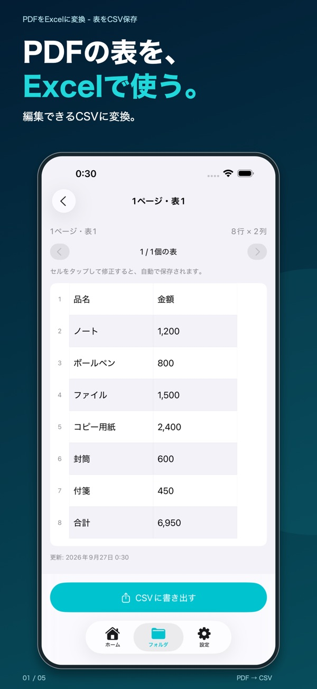
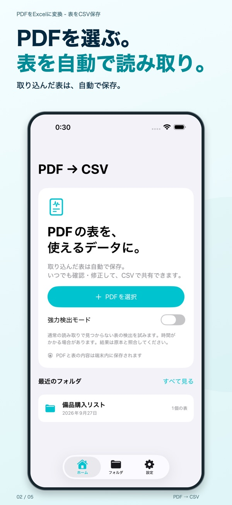
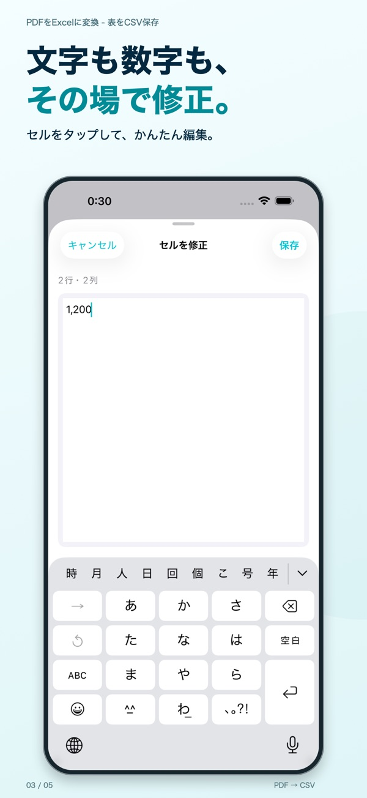

複数ページも読み取り
「ファイル」に保存したPDFを選ぶと、表を自動で抽出します。スキャンしたPDFにも対応します。
iPhone・iPadのPDF表変換アプリ
PDFの表を読み取り、文字や数字を確認・修正して、Excelで開けるCSVへ。表を一から打ち直す手間を減らせます。

特徴
「ファイル」に保存したPDFを選ぶと、表を自動で抽出します。スキャンしたPDFにも対応します。
元のPDFと見比べながら、気になる文字や数字を編集。書き出す前に内容を確認できます。
元のPDFと表を端末内に保存。フォルダで整理し、複数の表をまとめてCSVとして共有できます。
はじめて使う方へ
ホームの「PDFを選択」からファイルを取り込みます。
保存された表を開き、セルをタップして文字を直します。金額や列の対応も元PDFで確認してください。
ファイルに保存するか、メールやAirDropなどで共有。Excel側でCSVを取り込みます。


出力形式はCSVです。Excelで開いて編集・集計できますが、.xlsx形式を直接書き出す機能はありません。
CSVには文字列をそのまま保存します。Excelの取り込み画面で、IDの列を「文字列」に指定してください。
回転した表、縦書き、密集した罫線なしの表、ぼやけたスキャンなどは正しく読み取れない場合があります。必ず原本と照合してください。行・列の挿入には対応していません。
変換のためにPDFや表を外部サーバーへ送信しません。他のアプリへの共有は、ご自身で共有操作をした場合に行われます。